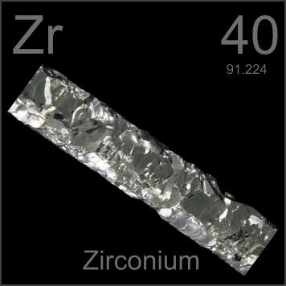

HOME
PREVIOUS
NEXT

Zirconium
Atomic Weight: 91.224
Density: 6.511 g/cm3
Melting Point: 1855 °C
Boiling Point: 4409 °C
This spectacular crystal bar of pure zirconium was created by thermal decomposition of zirconium iodide. Important in the nuclear industry, zirconium's latest application is in body-piercing jewelry.